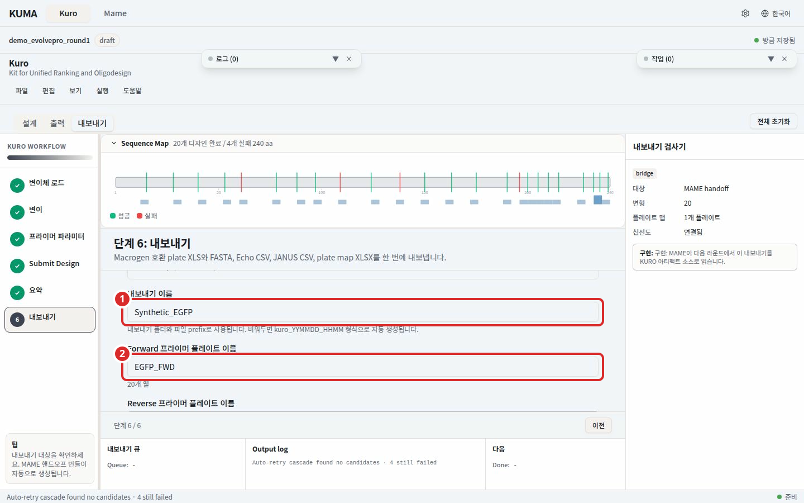
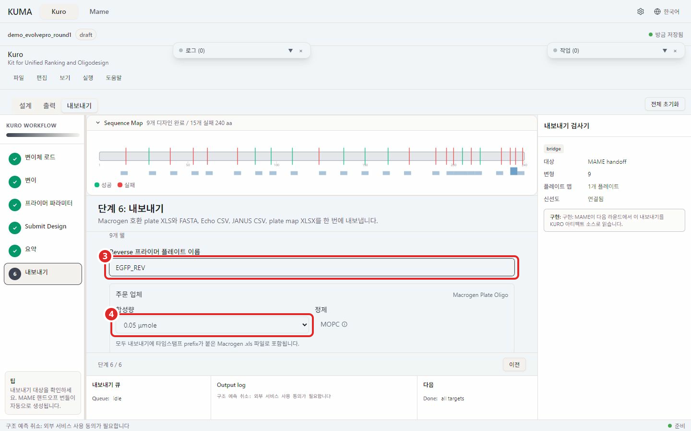
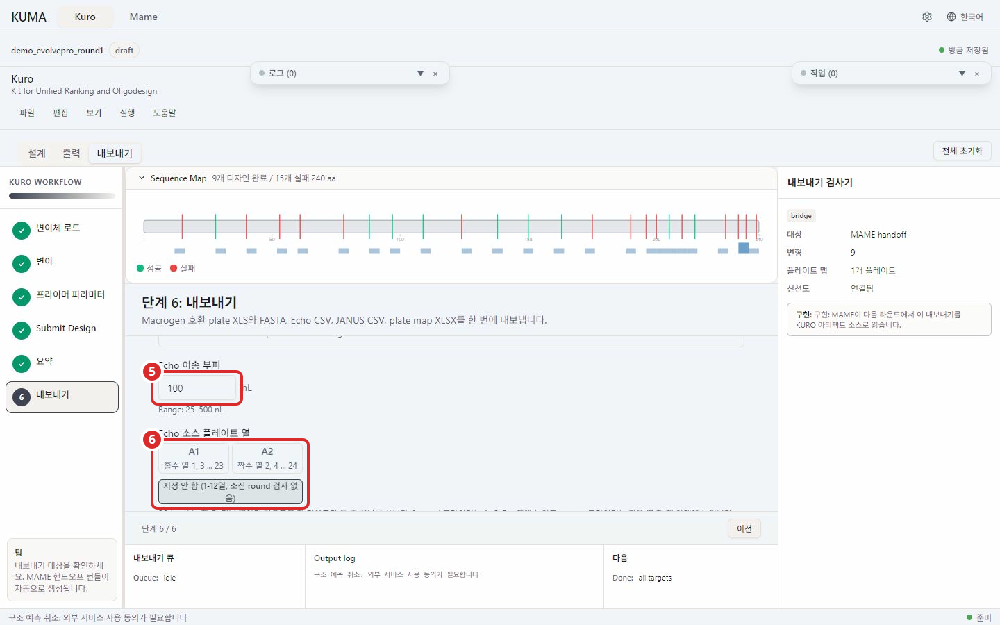
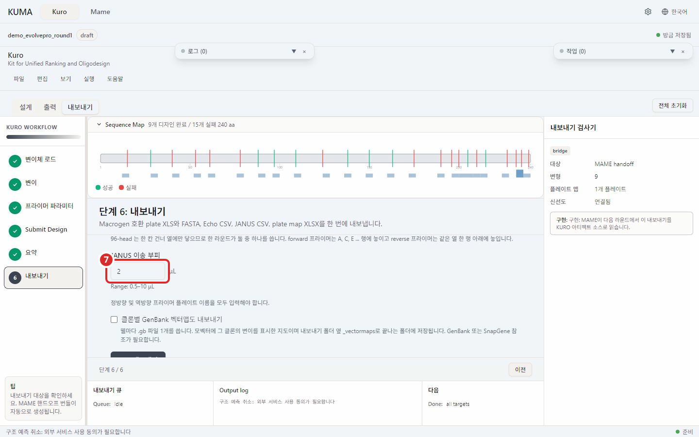
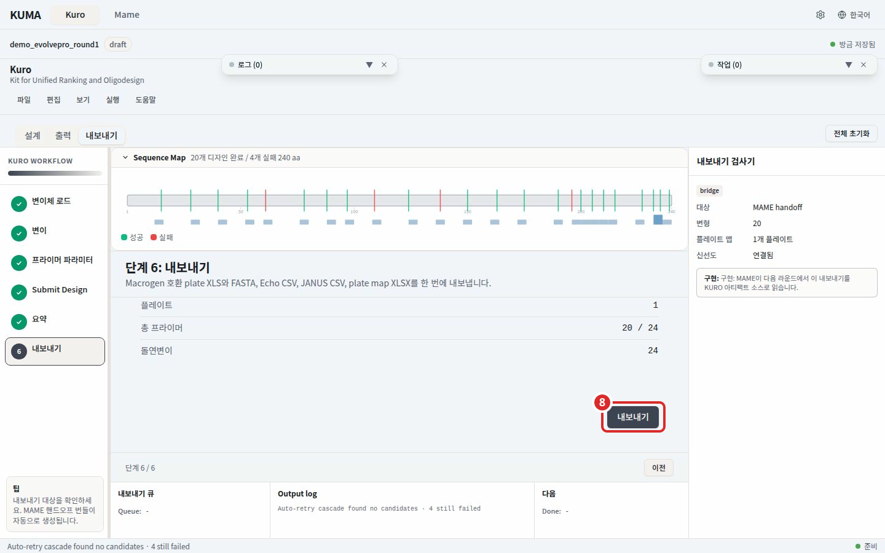
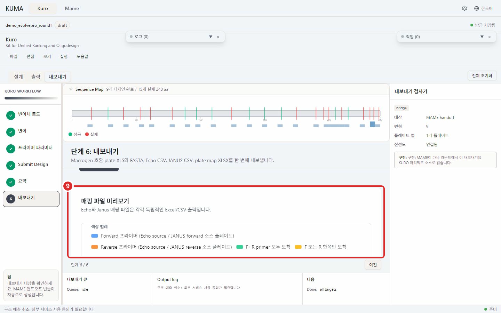
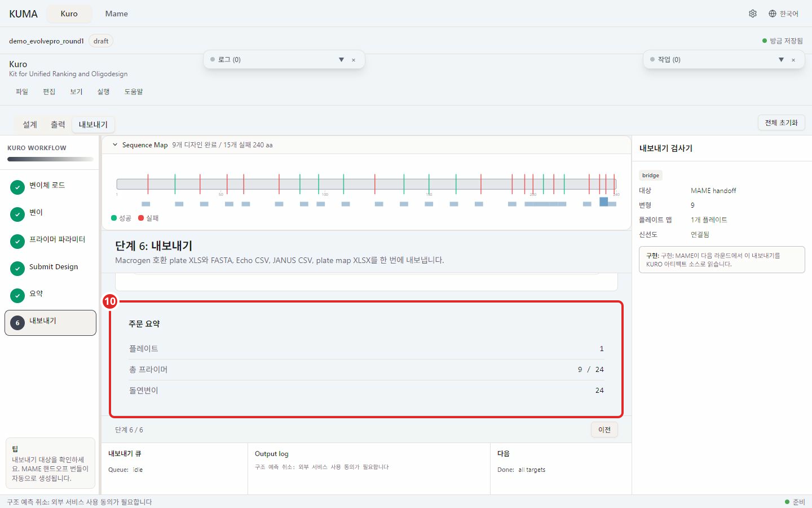

단계 6. 내보내기¶

번호 표시: 1 내보내기 이름; 2 Forward 프라이머 플레이트 이름

번호 표시: 3 Reverse 프라이머 플레이트 이름; 4 합성량 (0.05 또는 0.2 μmole)

번호 표시: 5 Echo 이송 부피; 6 Echo 소스 플레이트 열

번호 표시: 7 JANUS 이송 부피

번호 표시: 8 전체 내보내기

번호 표시: 9 Echo·JANUS 매핑 미리보기

번호 표시: 10 주문 요약
설계 결과를 주문 파일과 장비 이송 파일로 한 번에 저장한다.
내보낼 산출물에서 Macrogen 주문서(forward와 reverse 프라이머를 함께 포함), 프라이머 FASTA, Echo, JANUS를 고른다. 기본값은 Macrogen, FASTA, Echo 선택이며 JANUS는 선택하지 않는다. MAME 입력용 plate map과 실행 기록은 항상 포함된다. 모든 체크를 풀면 이 두 파일만 저장한다. 선택은 프로젝트에 저장되며 모든 라운드에 적용된다.
입력 항목¶
내보내기 이름, 폴더 이름과 파일 앞머리가 된다. 비우면kuro_YYMMDD_HHMM형식으로 자동 생성된다. 영문, 숫자, 한글, 밑줄, 하이픈 40자 이내.Forward 프라이머 플레이트 이름과Reverse 프라이머 플레이트 이름, 영문, 숫자, 밑줄, 하이픈 1-20자. Macrogen 주문서를 선택했을 때 두 이름이 필수다.주문 업체, Macrogen Plate Oligo 고정이다. 합성량은 0.05 또는 0.2 μmole 중 고르고 정제는 MOPC 로 고정이다.Echo 이송 부피, 25-500 nL.Echo 소스 플레이트 열, 96-head 가 384 플레이트에서 찍기 시작할 자리다. Forward 가 여기서 시작하고 reverse 는 짝 quadrant 로 간다. 플레이트에서 이미 쓴 quadrant 를 함께 지정하면 겹치는 조합이 거부된다.JANUS 이송 부피, 0.5-10 μL.내보내기를 누른 뒤 저장할 폴더를 고른다. 프로젝트를 열어 두었으면 프로젝트의design폴더가 기본으로 열린다. 96개 웰을 넘는 설계는 라운드별로 내보낸다.
산출물¶
고른 폴더 안에 <내보내기 이름>_YYYYMMDD 폴더가 만들어진다. 이름을 비웠으면 kuro_YYMMDD_HHMM이 된다. 같은 이름이 이미 있으면 뒤에 _2가 붙는다. 선택한 산출물과 필수 파일 두 개만 저장하며 모두 그 폴더 이름을 앞머리로 쓴다. Echo 소스 플레이트 선택은 Echo를 선택했을 때만 필요하다.
| 파일 | 언제 쓰는가 |
|---|---|
..._macrogen.xls |
Macrogen 에 프라이머 합성을 주문할 때 그대로 첨부한다 |
..._primers.fasta |
프라이머 서열만 다른 도구에 넣거나 눈으로 확인할 때 연다 |
..._echo.csv |
Echo 장비에 올리는 이송 목록이다 |
..._echo.xlsx |
같은 Echo 이송 목록을 사람이 검토할 때 연다 |
..._janus.csv |
JANUS 장비에 올리는 이송 목록이다 |
..._janus.xlsx |
같은 JANUS 이송 목록을 사람이 검토할 때 연다 |
..._platemap.xlsx |
어느 well 에 어떤 변이가 들어가는지 벤치에서 보며 작업할 때 쓴다 |
..._run.json |
이번 내보내기의 입력과 플레이트 배치 기록이다. 나중에 어떤 조건으로 만들었는지 확인할 때 연다 |
미리보기와 주문 요약¶
폼 아래 Echo 와 JANUS 탭에서 실제로 찍힐 배치를 저장 전에 확인한다. 맨 아래 주문 요약 은 플레이트 수, 총 프라이머 수, 돌연변이 수를 보여준다.
경고와 오류¶
| 화면에 보이는 것 | 할 일 |
|---|---|
필수 입력이 누락되어 진행할 수 없습니다 |
함께 뜬 목록의 항목을 채운다. 플레이트 이름 두 개가 주로 걸린다 |
96-well 플레이트 하나를 초과합니다 |
결과 표에서 포함 체크를 풀어 96개 이하로 줄인다. 이 상태에서는 버튼이 눌리지 않는다 |
영문, 숫자, 밑줄, 하이픈을 1-20자로 입력하세요. |
플레이트 이름에서 공백과 특수문자를 뺀다 |
영문, 숫자, 한글, 밑줄, 하이픈을 40자 이내로 입력하세요. |
내보내기 이름을 줄이거나 쓸 수 없는 문자를 바꾼다 |
| 일부 파일만 저장됐다는 알림 | 알림이 실패한 파일 이름을 알려준다. 폴더를 열어 확인한 뒤 다시 내보낸다 |
다음¶
KURO 작업은 여기서 끝난다. 시퀀싱 결과가 오면 같은 프로젝트 폴더의 MAME 탭 으로 간다.